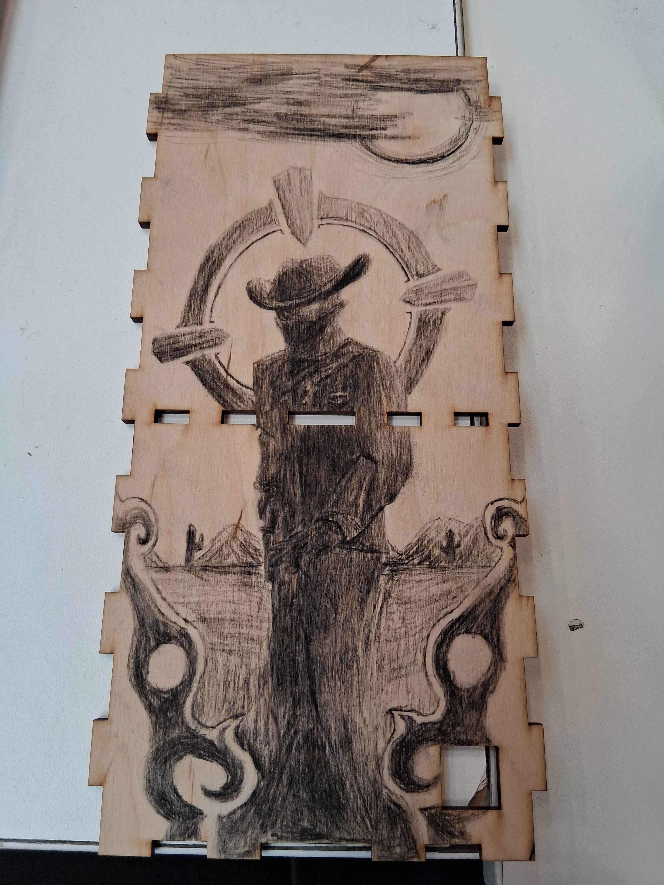
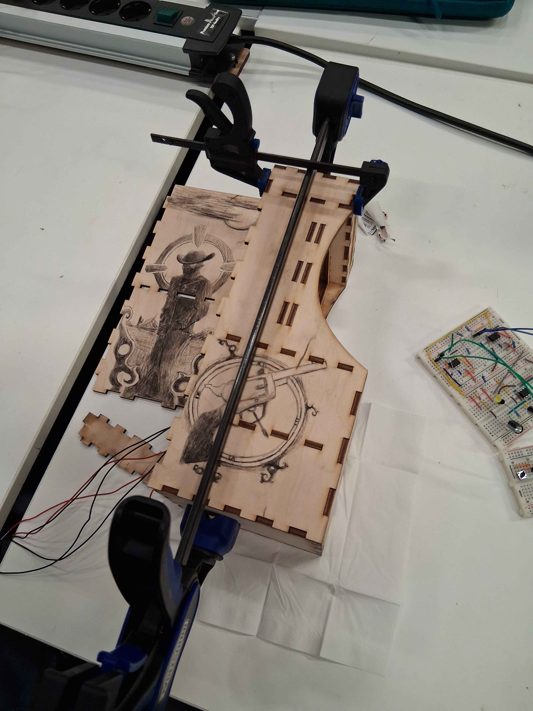
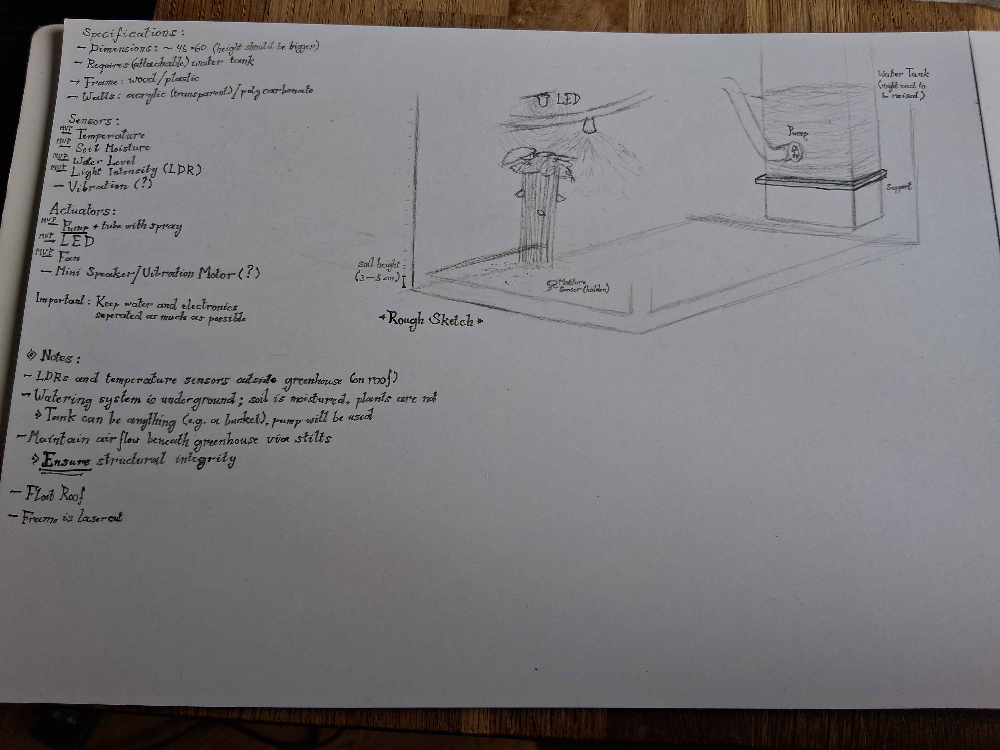
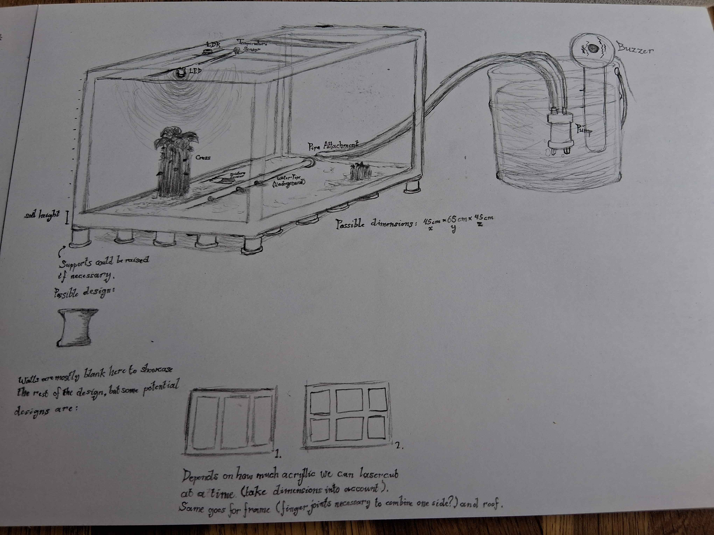
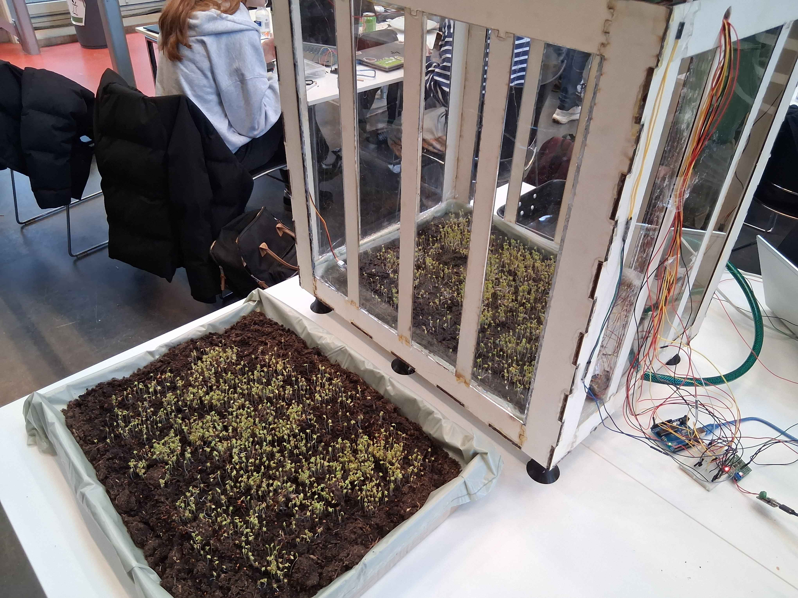

University Projects
M1 — PSA Accessibility Design
A small PSA that was meant to inform architects about accessibility design. My role in the project here was largely editing the video, as well as adding sound effects and composing my own music piece to fit the video (the piano heard in the background).
M1 — "Trigger Finger" (Competitive Arcade Cabinet Shooter)


This was a project where we were taught the basics in electronics and tasked with creating something interactable with the NE555 chip. My part in this project was delegated to the theme of the arcade cabinet and the design on the outside.
One of the group members' ideas was to have something related to time and requiring either of two players to press their button first (playing against each other) — I came up with the concept of a Wild West shooter and giving it the name "Trigger Finger" as interaction was mainly done with one finger.
M2 – Smart Greenhouse



An automated greenhouse operated with the assistance of both Processing and an Arduino uno. Blue LEDs would light up if the system detected too little light in the greenhouse and the system would water the soil if its moisture was too low.
I was largely responsible for the design (see sketches above) and also created a 3D model which would be put together in reality via laser-cutting woodpieces and acrylic, but I also made the LED system functional.
M3 — Inclusive Internet of Tomorrow
This project involved working with a client, who desired to see (any sort of) prototype from our group that could help raise awareness about accessibility, e.g. for the visually impaired.
It was decided to create a 3D game prototype that simulated visual impairments. The player is tasked with solving simplistic puzzles, but as they continue they rack up different visual impairments (only two present in-game, though three are implemented). These impairments would complicate task completion, but a voice assistant could be utilized in order to read text or the alt text of images — but not all images had fitting alt text!
This was the core message of the prototype: a vast majority of websites already fail to adhere to standard Web Content Accessibility Guidelines (WCAG), which means screen readers are unable to display content properly to people with impairments (such as, but not limited to visual impairments). As such, these people are barred access to the internet, whilst technology is capable of letting them participate more in society.
Unfortunately, this website itself isn't very accessible either... not yet, at least.